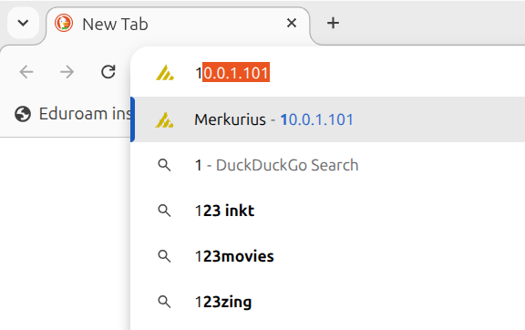
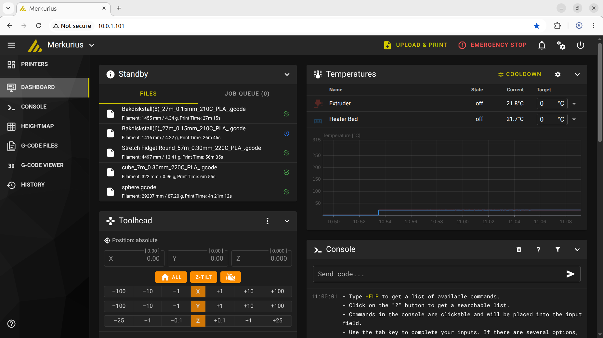
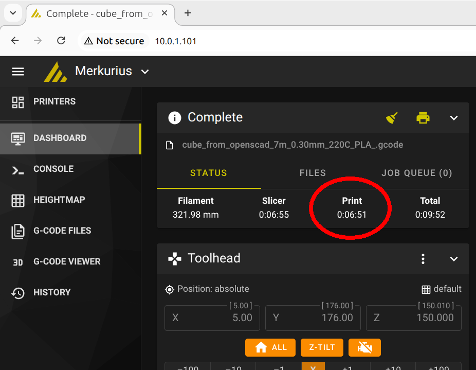
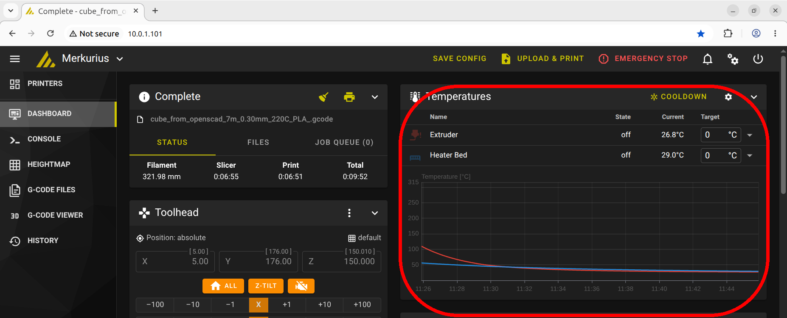
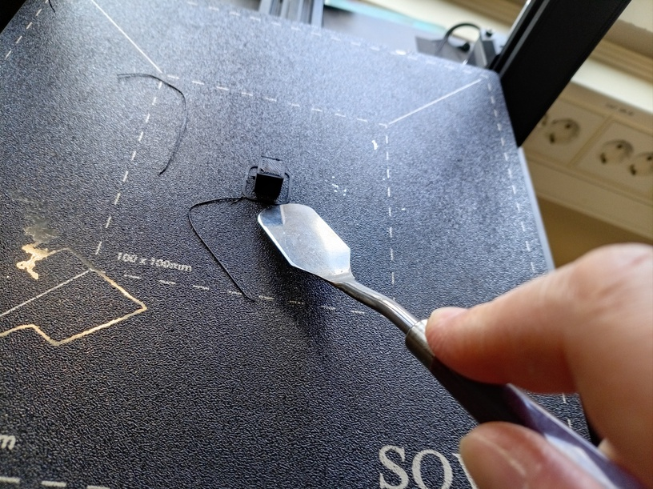

🇸🇪 1. Att skriva ut 🇬🇧 1. To print¶
För att skriva ut, behöver du en STL fil av din ritning. I båda Blender och OpenSCAD kan du exportera din ritning till STL.
I Blender, klicka 'File | Export | Stl (.stl)' för att exporter din model till en STL fil.
To print, you need an STL file of your drawing. In both Blender and OpenSCAD, you can export your drawing to STL.
In Blender, click 'File | Export | Stl (.stl)' to export your model to an STL file.

I OpenSCAD, klicka 'File | Export | Export as STL' för att exporter din model till en STL fil.
In OpenSCAD, click 'File | Export | Export as STL' to export your model to an STL file.

🇸🇪 1.1. Att ladda en STL fil in PrusaSlicer 🇬🇧 1.1. To load an STL file into PrusaSlicer¶
Starta programmet PrusaSlicer.
Start the program called PrusaSlicer.

Klick på 'File | Import | Import STL'.
Click on 'File | Import | Import STL'.

Välja en STL fil och klicka på 'Open'.
Select an STL file and click on 'Open'.

Nu har du laddet en kub i PrusaSlicer. Den ser ut likadant som här:
Now you have loaded a cube into PrusaSlicer. It looks something like this:

🇸🇪 1.2. Att välja en 3D skrivare 🇬🇧 1.2. Picking a 3D printer¶
I Makerspacet, letar efter en 3D skrivare som är ledigt. Varje 3D skrivare har ett namm. Till exempel, den här skrivare här nere heter 'Merkurius'.
In the Makerspace, look for a 3D printer that is available. Each 3D printer has a name. For example, this printer down here is called 'Merkurius'.

I PrusaSlicer, väljer samma 3D skrivare.
In PrusaSlicer, select the same 3D printer.

🇸🇪 1.3. Att slica 🇬🇧 1.4. Slicing¶
Click 'Slice now'.
Klicka på 'Slice now'.

Nu är slicingen klart.
Now the slicing is done.

🇸🇪 1.4. Att skriva ut 🇬🇧 1.4. Printing¶
Hos Uppsala Makerspace har vi två regler kring 3D skrivning:
- Under din första skrivning, måste du kollar på skrivaren hela tiden. Målet är att du ser hur en vanligt/lyckande skrivning ser ut
- Under din senerare skrivningar, måste du vara i hörseldistans av skrivaren. Målet är att du kan stoppa skrivaren när något gor fel.
Ditt skrivning ska tar lite mindre än 10 minuter.
Om du förstår reglerna, klicka på 'Send to printer' i högerneret hörnet.
At Uppsala Makerspace we have two rules about 3D printing:
- During your first print, you must look at the printer the whole time. The goal is that you see what a normal/successful print looks like
- During your later prints, you must be within earshot of the printer. The goal is that you can stop the printer when something goes wrong.
Your first print will take a little less than 10 minutes.
If you understand the rules, click 'Send to print' ('Send to printer') in the bottom-right corner:

Du blir frågat hur skrivaren måste kallas din 3D tryck. Klicka på 'Upload and print' ('ladda up och skriv ut').
You will be asked what the printer must be called for your 3D print.
Click 'Upload and print' ('load up and print').

Nu bör 3D skrivaren sätter sig igång.
Igen, regeln är att, under din första skrivning, måste du kollar på skrivaren hela tiden. Målet är att du ser hur en vanligt/lyckande skrivning ser ut.
Så, vad ser du att skrivaren gör först?
Kolla på skärmen av 3D skrivaren. Hur länge ska din 3D tryck tar?
The 3D printer should now start working.
Again, the rule is that, during your first print, you have to look at the printer all the time. The goal is that you see what a normal/successful print looks like.
So, what do you see the printer doing first?
Look at the screen of the 3D printer. How long should your 3D print take?

På värmebädden (plattan där skriving tar plats på), på framsida finns en symbol av en fingeravtryck. Vad tror du att den betyder?
On the heating bed (the plate where the printing takes place), on the front there is a symbol of a fingerprint. What do you think it means?

🇸🇪 1.6. Efter utskriving 🇬🇧 1.6. After printing¶
När utskriften är klar tar vi inte bort den direkt. Istället väntar vi tills värmebädden har svalnat till lägre än 30 grader Celsius.
Vi kommer att använda webbplatserna för vår 3D för att avgöra detta (och mer).
Anslut till UMS WiFi. Skriv sedan i din webbläsare URL:en som matchar din skrivare i sökfältet.
When the print is done, we do not remove it directly. Instead, we wait until the heating bed has cooled down to lower than 30 degrees Celsius.
We will use the websites of our 3D to determine this (and more).
Connect to the UMS WiFi. Then, in your webbrowser, type in the search bar the URL matching your printer.
| Printer | URL |
|---|---|
| Merkurius | 10.0.1.101 |
| Venus | 10.0.1.102 |
| Tellus | 10.0.1.103 |
| Mars | 10.0.1.104 |
| Uranus | 10.0.1.105 |

Du kommer nu att se webbplatsen för din favorit 3D-skrivare.
You will now see the website of your favorite 3D printer.

På webbplatsen av din favorit 3D-skrivare, kan du se hur lång tid utskriften tog.
At the website of your favorite 3D printer, you can see how long the print took.

Vi är intresserade av att ta reda på när värmebädden har svalnat till mindre än 30 grader Celsius.
Det visas här:
We are interested in finding out when the heat bed has cooled down to less than 30 degrees celsius.
It is shown here:

När värmebädden är under 30 grader Celsius, kan du ta bort din 3D-utskrift med verktyg (dvs. inte dina händer). Använd ett metallverktyg för att peta i botten av din 3D-utskrift (detta kommer inte att skada värmebädden).
När 3D-utskriften är lös, använd ett verktyg för att trycka bort den från 3D-skrivaren (dvs. använd inte dina händer).
When the heat bed is less than 30 degrees Celsius, you can remove your 3D print with tools (i.e. not your hands). Use a metal tool to poke at the bottom of your 3D print (this will not damage the heating bed).
When the 3D print is loose, use a tool to push it off the 3D printer (i.e. do not use your hands).

Om allt lyckades: grattis, du har skrivit ut din första sak!
If everything was successful: congratulations, you have printed your first thing!